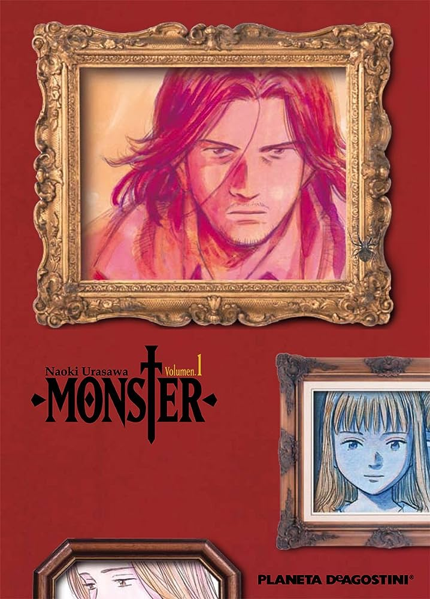
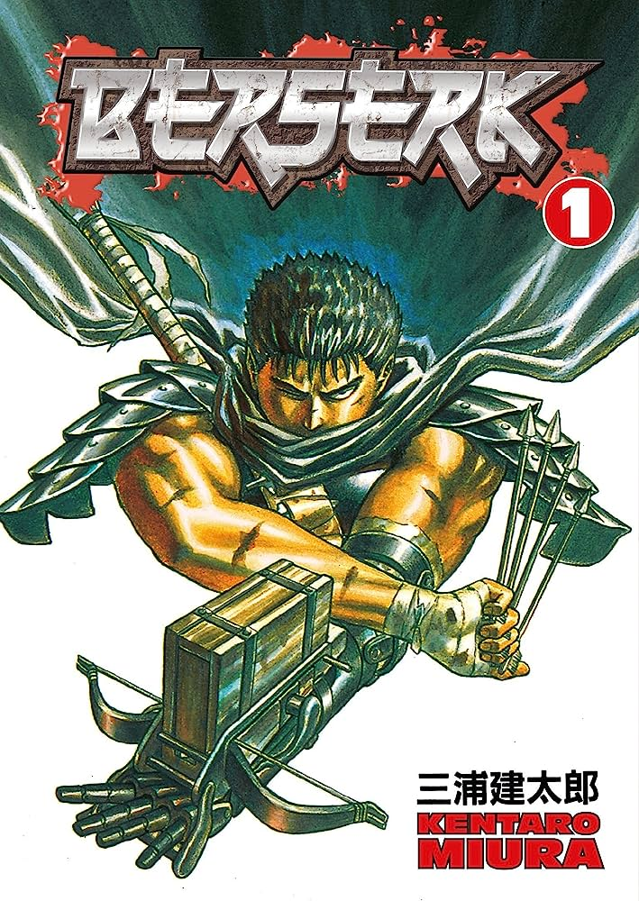

Estas son algunas de mis recomendaciones de mangas:
1: Monster(Seinen)
Este manga cuenta la historia de Kenzo Tenma, un cirujano prodigio que salvó la vida
de un niño llamado Johan que recibió un disparo en la cabeza. Poco tiempo después
suceden una serie de asesinatos relacionados con el paciente que el doctor Tenma había salvado.
Tras descubrir esto, Tenma empieza a investigar estos asesinatos para dar con la causa de todo,
pero en su camino se encontrará con varias dificultades al verse acusado de estos crímenes.
Monster es una historia que mezcla el misterio y el suspense con un poco de acción en una trama
muy bien estructurada, que tras leer el principio, que puede resultar algo lento, esta obra
se convierte en uno de los mejores mangas que he leido.
2:Berserk(Seinen)
Este manga cuenta la historia de Guts, un niño nacido de un cadáver
que fue acogido por un grupo de mercenarios dedicados a matar y saquear bienes.
Guts a lo largo de la historia va viajando hasta que se encuentra con la banda del halcón, un pequeño
ejército liderado por Griffith, a servicio del reino de Midland.
Tras perder un duelo contra Griffith, Guts se une a la banda del halcón donde
conocerá a sus primeros amigos, entre los que se encontraba una mujer que más adelante sería la
novia de Guts llamada Casca.
Todo va bien para Guts hasta que en un momento de la historia el rey de Midland captura a Grifith
por estar con su hija en su habitación, lo que provoca que la banda del halcón acuda a su rescate.
A partir de este momento, la historia entra en una fase más oscura que afectará de forma negativa
a Guts.
Berserk es una historia oscura que presenta un mundo corrupto por la moral de los seres humanos.
Lo que me gusta de Berserk es la gran representación que hace su fallecido autor Kentaro Miura, de
un mundo fúnebre, sin ningún tipo de censura de escenas sensibles, con un arte impresionante.
3: Tokyo Ghoul (Seinen)
Este manga cuenta la historia de Ken Kaneki, un estudiante normal y corriente.
En el mundo de Tokyo Ghoul, existen unas criaturas comehombres llamadas ghouls, que se camuflan
entre la población para poder sobrevivir y esquivar a la asociación anti-ghouls, encargada de
exterminar a estas criaturas para mantener la seguridad en la ciudades.
Kaneki se ve envuelto en un supuesto accidente que mata a uno de los ghouls que estaba a punto de
asesinarle, pero Kaneki resulta herido en este trance.
Tras ser operado para que no muriese, Kaneki se siente de forma extraña, ya que no puede consumir
ningún alimento sin tener ganas de vomitar.
Más adelante, Kaneki se entera de que le implantaron los órganos del Ghoul para que pudiese sobrevivir,
lo que le convierte en un híbrido humano y ghoul.
Tras este suceso, Kaneki se ve obligado a convivir con ghouls para poder prosperar mientras
evita que la asociación anti-ghouls lo encuentre.
Este manga plantea una trama muy interesante: ¿Qué pasaría si te convirtieras en un depredador
de tu propia especie?
Tokyo Ghoul desarrolla esta cuestión de forma excelente a través del protagonista Kaneki,
que a lo largo de la historia desarrolla conflictos morales que provocan la desastibilidad
emocional de Kaneki cambiando su forma de ser drásticamente.